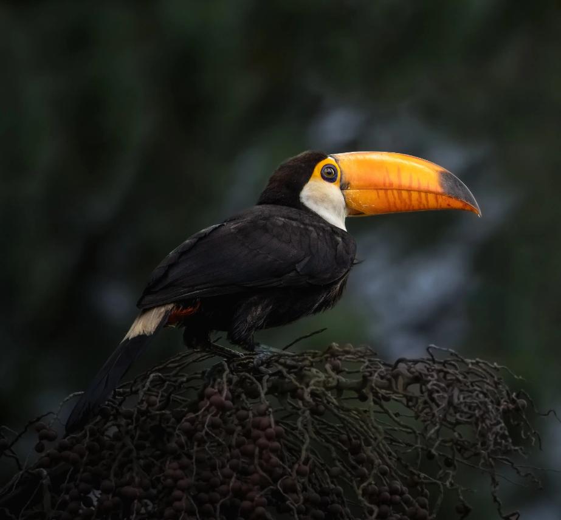

ONGs e Projetos de Conservação
A proteção da fauna brasileira é uma tarefa que vai além do poder público. Diversas organizações não-governamentais (ONGs), institutos e projetos comunitários desempenham um papel essencial na preservação de espécies ameaçadas e ecossistemas vulneráveis.
Essas entidades atuam de forma independente, mas muitas vezes colaboram com universidades, comunidades locais e órgãos governamentais. Seus esforços envolvem desde o resgate e reabilitação de animais silvestres até programas de educação ambiental, pesquisa científica e reflorestamento.
A seguir, destacamos algumas das ONGs e iniciativas mais relevantes que trabalham pela conservação da fauna no Brasil.
